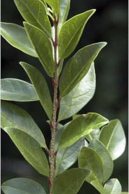
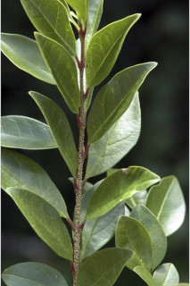
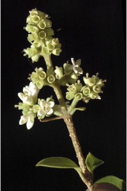
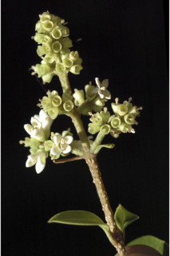

Small trees up to 5 m tall.
5 ಮೀ. ಎತ್ತರದವರೆಗಿನ ಸಣ್ಣ ಗಾತ್ರದ ಮರಗಳು.
Small trees up to 5 m tall.
சிறியமரங்கள் 5 மீ. உயரம் வரை வளரக்கூடியது.
Bark pale brown, lenticellate; blaze white.
ತೊಗಟೆ ತೆಳು ಕಂದು ಬಣ್ಣದಲ್ಲಿದ್ದು ವಾಯುವಿನಿಮಯ ಬೆಂಡು ರಂಧ್ರಗಳ ಸಮೇತವಿರುತ್ತದೆ;ಕಚ್ಚು ಮಾಡಿದ ಜಾಗ ಬಿಳಿಯಾಗಿರುತ್ತದೆ.
Bark pale brown, lenticellate; blaze white.
மரத்தின் பட்டை வெளிறிய ப்ரவுன் நிறமானது, பட்டைத்துளைகள் (லெண்டிசெல்லேட்) உடையது; உள்பட்டை வெள்ளை நிறமானது.
Young branchlets terete, minutely pubescent, lenticellate
ಎಳೆಯ ಕಿರುಕೊಂಬೆಗಳು ದುಂಡಗಿರುತ್ತವೆ ಮತ್ತು ಸೂಕ್ಷ್ಮ ಮೃದುತುಪ್ಪಳದಿಂದ ಕೂಡಿದ್ದು ವಾಯುವಿನಿಮಯ ಬೆಂಡು ರಂಧ್ರಗಳ ಸಮೇತವಿರುತ್ತದೆ .
Young branchlets terete, minutely pubescent, lenticellate
சிறியநுனிக்கிளைகள் குறுக்குவெட்டுத் தோற்றத்தில் வளையமானது, சிறிய உரோமங்களுடையது, பட்டைத்துளைகள் (லெண்டிசெல்லேட்) உடையது
Leaves simple, opposite, distichous, sometimes subopposite; petiole up to 1 cm long, canaliculate; lamina 1.5-5 (7.5) x 1.2-3.2 (-5) cm, elliptic to elliptic-obovate, apex acute or short acuminate with mucronate tip, base rounded to attenuate, margin entire, chartaceous, glabrous beneath; midrib canaliculate above; secondary_nerves 3-6 pairs, slender; tertiary_nerves obscure.
ಎಲೆಗಳು ಸರಳವಾಗಿದ್ದು ಅಭಿಮುಖ ಜೋಡನಾ ವ್ಯವಸ್ಥೆಯಲ್ಲಿದ್ದು ಕಾಂಡದ ಎರಡೂ ಕಡೆ ಎದುರು ಬದರಿನ ಲಂಬ ಸಾಲಿನಲ್ಲಿರುತ್ತವೆ; ಎಲೆತೊಟ್ಟುಗಳು 1 ಸೆಂ.ಮೀ.ವರೆಗಿನ ಉದ್ದವಿದ್ದು, ಕಾಲುಗೆರೆ ಸಮೇತವಿರುತ್ತವೆ; ಪತ್ರಗಳು1.5-5(7.5)X 1.2-3.2(-5) ಸೆಂ.ಮೀ. ಗಾತ್ರ, ಅಂಡವೃತ್ತದಿಂದ ಅಂಡವೃತ್ತ-ಬುಗುರಿಯ ಆಕಾರ, ಚೂಪಾದ ಅಥವಾಅಗ್ರದಲ್ಲಿ ಮೊನಚು ಮುಳ್ಳುಳ್ಳ ಸಣ್ಣ ಗಾತ್ರದ ಕ್ರಮೇಣ ಚೂಪಾಗುವ ಮಾದರಿಯ ತುದಿ, ದುಂಡಾದುದರಿಂದ ಒಳಬಾಗಿದ ಮಾದರಿವರೆಗಿನ ಬುಡ, ನಯವಾದ ಅಂಚು,ಕಾಗದವನ್ನೋಲುವ ಮೇಲ್ಮೈ ಹೊಂದಿದ್ದು ತಳಭಾಗ ರೋಮರಹಿತವಾಗಿರುತ್ತವೆ ; ಮಧ್ಯನಾಳ ಮೇಲ್ಭಾಗದಲ್ಲಿ ಕಾಲುವೆ ಗೆರೆ ಹೊಂದಿರುತ್ತದೆ; ಎರಡನೇ ದರ್ಜೆಯ ನಾಳಗಳು 3 ರಿಂದ 6 ಜೋಡಿಗಳಿದ್ದು ತೆಳುವಾಗಿರುತ್ತವೆ;ಮೂರನೇ ದರ್ಜೆಯ ನಾಳಗಳು ಅಸ್ಪಷ್ಟ.
Leaves simple, opposite, distichous, sometimes subopposite; petiole up to 1 cm long, canaliculate; lamina 1.5-5 (7.5) x 1.2-3.2 (-5) cm, elliptic to elliptic-obovate, apex acute or short acuminate with mucronate tip, base rounded to attenuate, margin entire, chartaceous, glabrous beneath; midrib canaliculate above; secondary_nerves 3-6 pairs, slender; tertiary_nerves obscure.
இலைகள் தனித்தவை, எதிரடுக்கமானவை, எதிரடுக்கமானவை, குறுக்குமறுக்கானவை, சிலசமயங்களில் கிட்டத்தட்ட எதிரடுக்கமானவை, இருநெடுக்கு வரிசையிலையடுக்கம் (டைஸ்டிக்கஸ்); இலைக்காம்பு 1 செ.மீ. நீளமானது, குறுக்குவெட்டுத் தோற்றத்தில் கேனாலிகுலேட்; இலை அலகு 1.5-5 (7.5) X 1.2-3.2 (-5) செ.மீ., நீள்வட்ட வடிவானது முதல் நீள்வட்ட வடிவானது-தலைகீழ் முட்டை வடிவானது, அலகின் நுனி கூரியது அல்லது குட்டையான அதிக்கூரியது அதன் முனை மூயூக்கரனேட், அலகின் தளம் வட்டமானது முதல் அட்டனுவேட், அலகின் விளிம்பு முழுமையானது, சார்ட்டேசியஸ், உரோமங்களற்றது; மையநரம்பு மேற்புறத்தில் அலகின் பரப்பைவிட பள்ளமானது; இரண்டாம் நிலை நரம்புகள் 3-6 ஜோடிகள், மெல்லியது; மூன்றாம் நிலை நரம்புகள் கண்களுக்கு புலப்படாது.
Inflorescence terminal thyrsoid panicles, stout, short, dense, glabrous; flowers white, fragrant.
ಪುಷ್ಪಮಂಜರಿಗಳು ತುದಿಯಲ್ಲಿನ ಕದಿರಣಿಗೆ ರೂಪದ ಕವಲೊಡೆಯುವ ಮಾದರಿಯಲ್ಲಿದ್ದು ದೃಢವಾಗಿದ್ದು, ಸಣ್ಣ ಗಾತ್ರದಲ್ಲಿದ್ದು,ದಟ್ಟವಾಗಿದ್ದು ರೋಮರಹಿತವಾಗಿರುತ್ತವೆ;ಹೂಗಳು ಬಿಳಿ ಬಣ್ಣದವು ಮತ್ತು ಸುವಾಸನೆಯಿಂದ ಕೂಡಿರುವಂತಹವು.
Inflorescence terminal thyrsoid panicles, stout, short, dense, glabrous; flowers white, fragrant.
மஞ்சரி தண்டின் நுனியில் காணப்படும் தைராசாய்டு பேனிக்கிள், தடித்தவை, குட்டையானது, அடர்த்தியாக மலர்களுடையது, உரோமங்களற்றது; மலர்கள் வெள்ளை நிறமானது, நறுமணமிக்கது.
Drupe, obovoid, ca. 2 cm long, dark purple; seeds 1-3.
ಡ್ರೂಪ್ಗಳು ಬುಗುರಿ ಆಕಾರದಲ್ಲಿದ್ದು ಅಂದಾಜು 2 ಸೆಂ.ಮೀ. ಉದ್ದ ಹೊಂದಿದ್ದು, ದಟ್ಟ ಕೆನ್ನೀಲಿ ಬಣ್ಣದಲ್ಲಿರುತ್ತವೆ; ಬೀಜಗಳ ಸಂಖ್ಯೆ 1 ರಿಂದ ಮೂರು.
Drupe, obovoid, ca. 2 cm long, dark purple; seeds 1-3.

 



 
